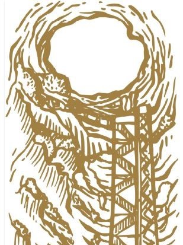

Le Gouffre puis la rivière souterraine...
Le gouffre de Padirac est l'entrée monumentale d'une cavité naturelle,
situé dans le Lot en France, d'une dimension de 35 mètres de diamètre environ. Au fond de ce gouffre, à 103 mètres de profondeur,
coule une rivière souterraine qui parcourt une partie d'un grand réseau de plus de 55 kilomètres de développement.
Une promenade au fil de l’eau, dans le silence étonnant du gouffre, devant le spectacle incroyable de l’érosion du monde souterrain.
Dessin du gouffre